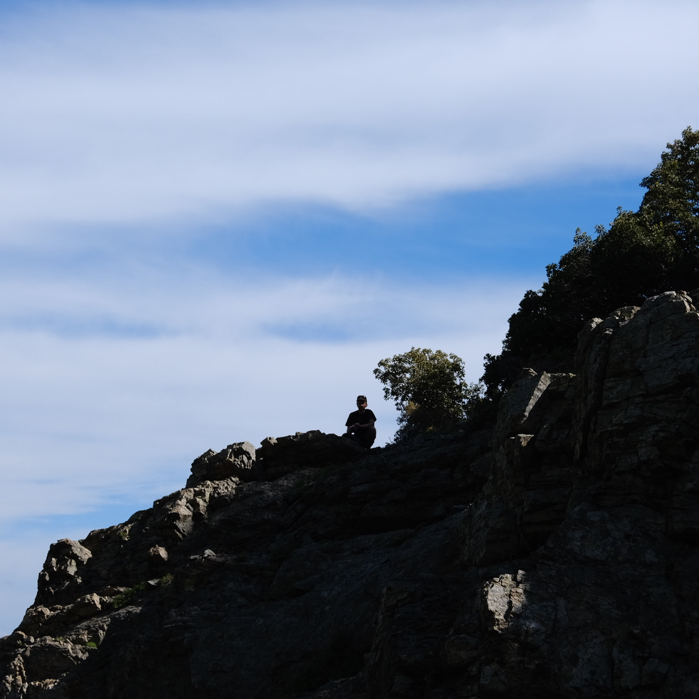

listen live every first Tuesday of the month at Kiosk Radio Brussels between 2 and 3pm
Latest show:
Tuesday, 03 December, 2024
@KIOSK RADIO with sequences

Tracklist:
- Sequences - Untitled tape recording
- Waning End - Phantom Room
- pablo diserens - mirage in motion
- Sequences - Untitled tape loop
- Sequences - All Is Weighed With Sleep
- Zaumne - Sleepwalking
- Sequences - Untitled field recording (Västervik, Sweden)
- S. Grey - A - III (Recent Tape Works-Measurement)
- Elton Vincent - Beneath the Tropismes Neon
- Sequences - Untitled field recording (Antwerp, Belgium)
- Prms - Mediterraenean Velvet III
- Billy Gomberg - Nanahari Edit (excerpt)
- Dayin - A Surge of Life
- Sequences - Untitled field recording (Edirne, Turkey)
- Herz Aus Glas - Opelt
- Sequences - Untitled tape recording
- Joel Danielsson - Currents
- Sequences - Untitled tape recording
- RG - Fairy Dust
→ browse archive on Kiosk Radio / Mixcloud